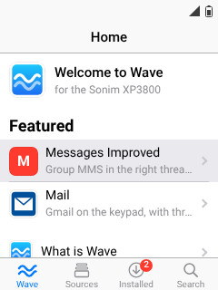

Read & explore
Books, Dictionary, New Yorker, Weather and Places keep reference material within reach.
Wave brings apps, system mods and updates together on the Sonim XP3800. Browse with the d-pad. Choose what goes on your phone.
Check your model and keep a verified backup before you begin.


The planned collection pairs everyday apps with optional changes to the stock phone.
Books, Dictionary, New Yorker, Weather and Places keep reference material within reach.
Música, Video, List, Print and Serve make room for the things you carry and share.
Mail, Canvas, Charge, Authenticator and Flashcards. Use the local setup tool for supported apps.
Messages Improved, Launcher Improved and Music Improved change stock apps. Mods take effect after a reboot.
A source is an HTTPS git repository with a manifest for each package. Keep release binaries at immutable URLs; include their sizes and hashes so Wave can verify each download.
Modules can run as root and read private data. A matching checksum detects a changed download, not a malicious maintainer. A broken module or boot image can stop the phone from starting. Keep personal files and a verified stock backup off the phone.
Wave takes its cue from Cydia. Thanks to anonymousfliphones and flipphoneguy of the JTech Forums community for their XP3 research, and to the Magisk project.
Follow development on GitHub ↗